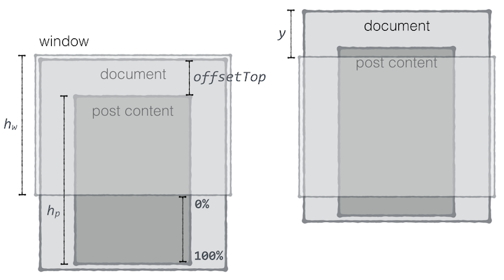

이상한 모임 사이트에서 글을 읽을 때 상단에 프로그레스 바(progress bar)가 표시되는 것을 발견했다. 스크롤해서 글을 읽어감에 따라 글을 얼마나 읽었는지, 얼마나 남았는지를 쉽게 알 수 있어 매우 마음에 들었다. 내 블로그에도 이걸 적용하면 좋겠다는 생각이 들어 툭탁툭탁 만들어 봤다.
마크업
마크업은 다음과 같이 구성한다. #progress의 높이는 처음에는 8px였다가 어느 정도 스크롤되면 36px로 글의 제목을 표시할 만큼 두껍게 바꿀 것이다. #progress 안에는 #bar가 있는데, 이걸 사용해 진행률을 표시할 것이다. 처음에는 width를 0%로 했다가 스크롤되어 글의 마지막 부분이 화면에 표시될 때 100%로 맞추면 된다.
<div id="progress" style="height: 8px;">
<div id="bar" style="width: 0%;"></div>
<div class="container">
<div id="scroll-title">제목</div>
</div>
</div>
#scroll-title은 글의 제목을 표시할 요소다. 처음에는 두께가 얇에서 제목이 보이지 않지만 스크롤해 글의 제목이 브라우저 창 위로 올라가 보이지 않게 되면 프로그레스 바의 두께를 두껍게 변경해 여기에 제목이 표시되게 한다.
CSS
#progress와 #bar, #scroll-title의 스타일은 다음과 같이 지정한다. #bar와 #scroll-title은 겹쳐 있어야 하므로 모두 position을 absolute로 하고 top을 0으로 지정했다.
#progress {
background: rgba(0,0,0,0.2);
height: 8px;
left: 0;
overflow: hidden;
position: fixed;
top: 50px;
-moz-transition: all .3s ease;
-ms-transition: all .3s ease;
-o-transition: all .3s ease;
transition: all .3s ease;
width: 100%;
z-index: 900;
}
#bar {
background-color: #0898b3;
height: 100%;
position: absolute;
top: 0;
-webkit-transition: all .3s;
-moz-transition: all .3s;
-o-transition: all .3s;
-ms-transition: all .3s;
transition: all .3s;
width: 0;
}
#scroll-title {
color: white;
position: absolute;
top: 0px;
padding: 5px 0;
}
트랜지션을 사용하면 프로그레스 바의 높이나 진행률을 변경할 때 좀더 부드럽게 보인다.
로직
페이지가 스크롤될 때 이벤트를 받아 지행률을 계산하고 #bar의 width를 변경해야 한다. 처음에 문서가 표시되었을 때는 진행률을 0%로, 글의 마지막 부분이 화면에 표시되면 100%로 표시해야 한다.

글의 안보이는 부분을 기준으로 생각하면 진행률 쉽게 구할 수 있다. 안 보이는 부분이 없으면 100%가 되는 것이다. 다만 안 보이는 부분의 높이를 바로 알 수는 없으므로 약간의 계산이 필요하다. 를 브라우저 창의 높이, 를 글(post content)의 높이라 하면 처음 페이지가 표시됐을 때 글의 안 보이는 부분의 높이는 다음과 같이 구할 수 있다. 이 값을 기준으로 진행률을 계산할 것이므로 이 값을 라 하자. 글은 문서의 맨 위에 딱 붙어 있는게 아니므로 를 전체 높이로 볼 수 있고 여기서 를 빼주면 안 보이는 부분의 높이가 된다.
를 기준으로 스크롤 된 양()의 비율을 구하면 진행률을 구할 수 있다.
JavaScript
실제 적용된 JavaScript 코드는 다음과 같다. 설명한 공식을 이용했지만, base가 음수가 되거나 progress가 100 이상이 되는 것은 의미가 없으므로 Math.max, Math.min을 사용해 base와 progress가 특정 범위를 벗어나지 않도록 했다.
var threshold = $('h1').offset().top + $('h1').height() - $('nav').height(),
$postContent = $('.post-content'),
ph = $postContent.height(), // post height
wh = $(window).height(); // window height
$(document).scroll(function () {
if (!$postContent.length) return;
var offsetTop = $postContent.offset().top,
y = $(document).scrollTop(),
base = Math.max(5, offsetTop + ph - wh),
progress = Math.min(100, y / base * 100);
$('#bar').css({width: progress + '%'});
if (y <= threshold) {
$('#progress').height('8px');
} else {
$('#progress').height('36px');
}
});
threshold는 글의 제목이 위로 올라가 안 보이게 되는 높이를 뜻한다. 처음에는 프로그레스 바의 높이가 8px였다 threshold 이상 스크롤 되면 36px로 두껍게 바꿔 프로그레스 바 안에 글의 제목이 보이게 한다.
정리
- 마크업 구조가 이상한 모임 사이트와 조금 다르기는 하지만 잘 동작한다. 작업도 재미있었고, 블로그가 훨씬 나아진 것 같다. 이 블로그의 테마를 직접 만들어 사용했기 때문에 프로그레스 바를 붙이는 것도 어려운 작업은 아니었다.
- 이상한 모임 사이트에서는 글을 읽는데 걸리는 시간까지 표시해 준다. 이것도 따라 할까 하다 말았다. 글 읽는데 걸리는 시간은 사람마다 다를 것이다. 자세히 읽는 사람도 있겠지만 대부분은 그냥 휘리릭 스크롤 한 번 하고는 창을 닫을 것 같다. 따라서 글을 읽는데 걸리는 시간을 표시하는 게 무의미해 보였다.
- 예쁘게 보이게 하려고 노력했지만 색깔은 여전히 촌스럽다.